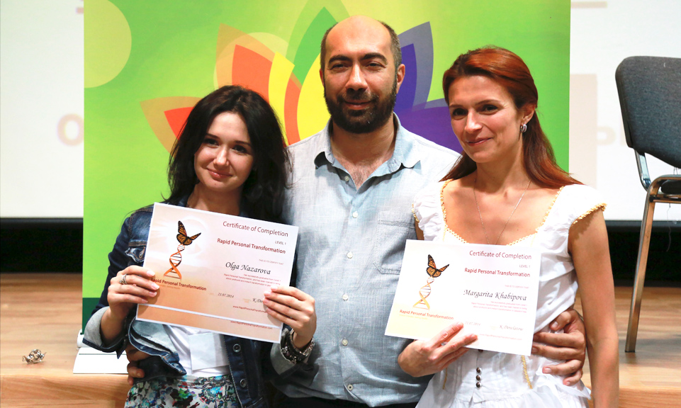

7 стратегий
радикального улучшения вашей жизни
-
100 дней. Плавная трансформация себя
Это бесплатный онлайн-проект, который поможет вам плавно и с минимальными усилиями стать сильной, осознанной личностью.
Каждое утро вы смотрите 10-15-минутное видео с заданием на день. Задание естественным образом встраивается в обычную жизнь и не требует много сил и времени на выполнение. А результат даёт сразу. Небольшой, но заметный.
И постепенно ваша жизнь становится легче, спокойнее, радостнее и богаче. Без накачки мотивацией и давления.
-
Реинтеграция. Методика чуда
Реинтеграция – это авторская методика Константина Довлатова, которая за 2-5 минут решает глубинные проблемы личности. Это духовная практика, которая заменяет психотерапию, медитации и месяцы (годы) работы над собой.
Реинтеграция работает, даже если вы в неё не верите. Она даёт мгновенный устойчивый результат, открывая недоступные ранее возможности и перспективы. И то, что для остальных – чудеса, для вас станет нормой жизни
-
Школа Коучинга Константина Довлатова
Классический коучинг открывает мощный ресурс. Но он не работает с причиной проблемы.
Уникальность подхода Константина Довлатова – проработка самой сути проблем. Клиент их даже не осознаёт, но из-за них не может достигать глобальных долгосрочных целей.
Пройдя Школу Коучинга, вы откажетесь от жизни по чужим сценариям и поставите собственные цели и задачи. Глубоко проработаете свою личность и за 6 месяцев станете другим человеком. И получите проверенную технологию, которая даст такой же результат вашим клиентам.
Научитесь решать проблемы клиентов за 2-3 сессии и в разы увеличите свой гонорар.
-

- 
-
RPT. Одна из самых эффективных современных психотехник
RPT за один сеанс навсегда устраняет причины возникновения большинства повседневных проблем. С деньгами, в отношениях, на работе и дома. Убирает повторяемость судьбы – похожие негативные ситуации.
Техники RPT легко встраиваются в ваше мышление и образ жизни. И мгновенно стирают всё, что мешает вам проявить свои истинные способности. Отключают подсознательные деструктивные программы, которые есть у всех без исключения.
-
Клуб тренеров
Клуб поднимает профессиональных коучей и психологов на новый уровень развития. Это переход от работы персонально и с маленькими группами к одновременному ведению сотен и тысяч человек.
В Клубе вы получите бесценные практические материалы по стратегии развития продаж и себя, как тренера. Способы добиваться великолепных результатов у клиентов. Инструкции для выхода на неправдоподобно большой доход. Ответы на финансовые и юридические вопросы.
-
Парадоксальная система исцеления жизни за 9 дней
“МАКсимальная жизнь" - ежегодный тренинг Константина Довлатова по глубинной проработке пяти важнейших сфер жизни.
Тренинг открывает способность управлять судьбой - быстро и радикально менять жизнь в нужном направлении.
Это квинтэссенция авторских наработок за 20-летнюю практику тренера и психолога, уникальный синтез кундалини-йоги, бизнес-инноваций и самых мощных техник личной трансформации. Основная идея тренинга - “Мгновенные изменения, которые останутся с вами навсегда”.
-
Коучинг с метафорическими картами
Система для тех, кто ищет личностного, духовного и финансового роста за гранью стандартных методов.
Работа с картами разработки Константина Довлатова быстро выводит на суть проблемы. Открывает истинные причины происходящего в жизни. Его корни лежат глубоко в подсознании, с помощью метафорических карт их легко увидеть и запустить процессы самоисцеления.